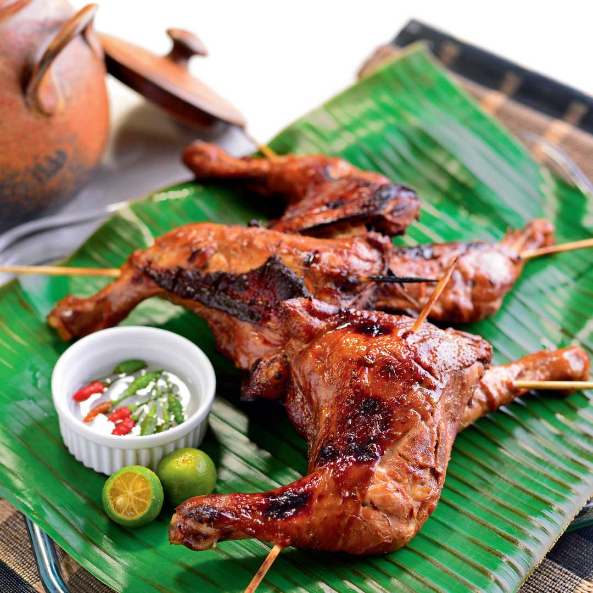

|

|
Description
Chicken inasal, commonly known simply as inasal, is a Filipino variant of lechon manok, marinated in a mixture of calamansi, pepper, coconut vinegar and annatto, then grilled over hot coals while basted with the marinade. It is served with rice, calamansi, soy sauce, chicken oil and vinegar.
Ingredients
2 lbs chicken cut into serving pieces
2 tablespoons ginger minced
2 tablespoons garlic minced
3/4 cup lemongrass chopped
1 cup coconut vinegar
1/2 cup lemon or calamansi juice
1 tablespoon salt
1/4 cup brown sugar
1 cup lemon soda softdrink
1/2 tablespoon ground black pepper
3 tablespoons annatto oil atsuete oil
1/2 cup margarine softened
1/4 teaspoon salt
1 teaspoon lemon or calamansi juice
Procedure
1. In a freezer bag or large bowl, combine chicken, lemongrass, salt, ground black pepper, ginger, garlic, brown sugar, vinegar, lemon-lime soda, and lemon juice.
2. Stir or shake the mixture until every ingredient is well incorporated. Marinade for 1 to 3 hours.
3. In a bowl, combine margarine, annatto oil, salt, and lemon juice then stir. Set aside.
4. Grill the chicken while basting generous amount of the margarine mixture.
5. Transfer the grilled chicken to a serving plate.
6.Serve with sinamak. Share and enjoy!
Price
P50 / serving
|